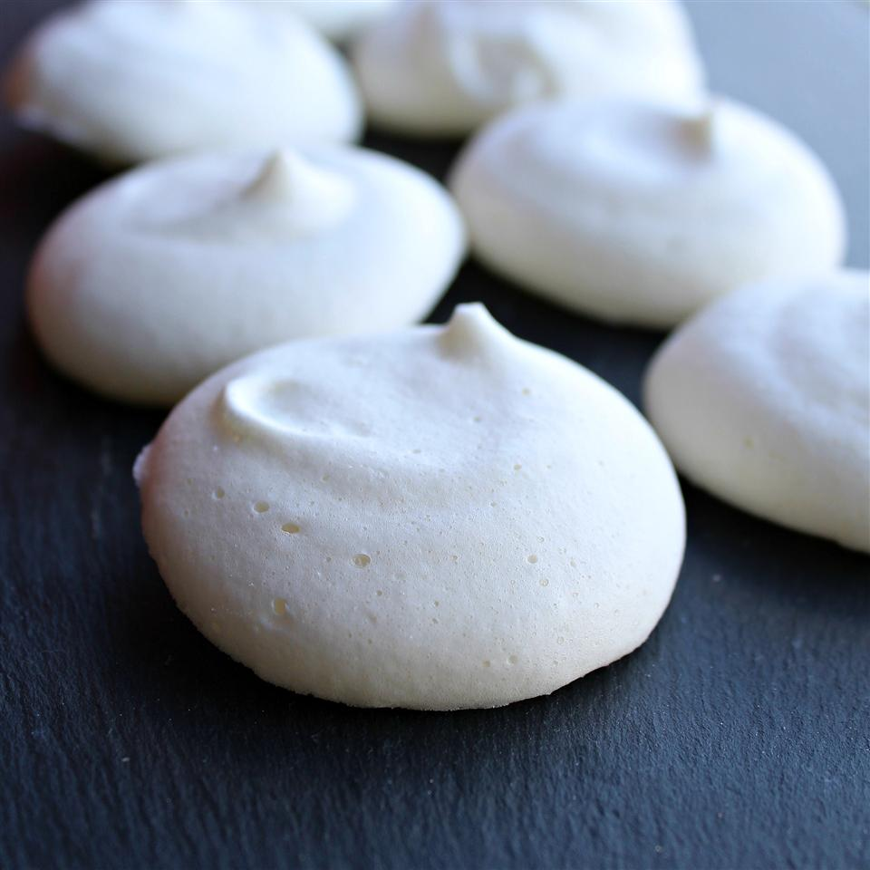

Vegan Merengues
These vegan meringues use the liquid from a tin of chickpeas as the substitute for egg whites - genius! Use these vegan meringues wherever you would use egg white meringue such as summer fruit pavlova and Eton mess.

Ingredients
- 1 (15 ounce) can chickpeas (garbanzo beans), undrained
- ¼ teaspoon cream of tartar
- ¾ cup white sugar
- ½ teaspoon vanilla extract (Optional)
Steps
-
Preheat oven to 210 degrees F (100 degrees C). Line a baking sheet with baking parchment.
-
Drain chickpeas, reserving 1/2 cup liquid from the can. Save the chickpeas for another use. Pour chickpea liquid into a bowl and add the cream of tartar. Beat mixture using an electric mixer until soft peaks form. Gradually add sugar, 1 tablespoon at a time, as you continually beat until glossy peaks form, about 20 minutes; beat in vanilla extract until well incorporated.
-
Spoon mixture into a piping bag and pipe into small circles, about 1 inch in diameter, onto the prepared baking sheet.
-
Bake in the preheated oven until meringues are firm and come away easily from the parchment paper, about 90 minutes. Remove from the oven and allow to cool completely, at least 15 minutes.